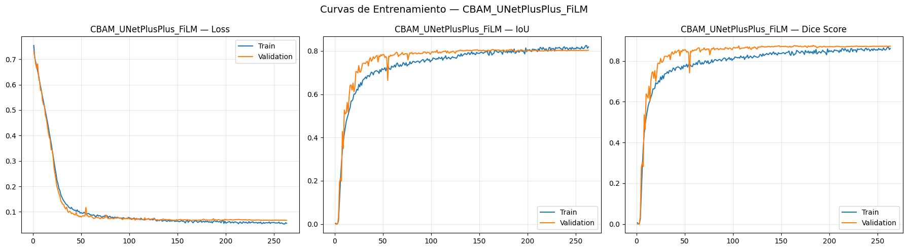
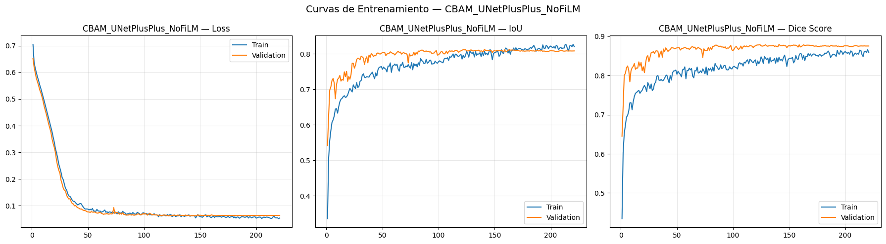
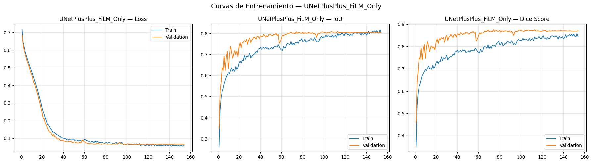
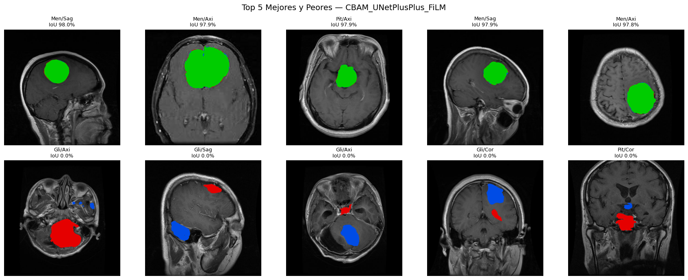
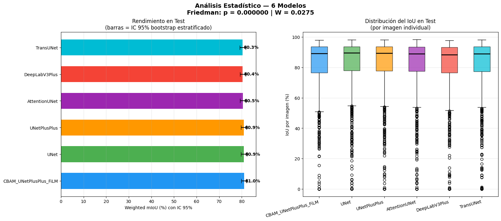

6. Modelo Propuesto: CBAM-UNet++ con FiLM Conditioning por Plano Anatómico#
En esta sección se implementa, entrena y evalúa el modelo original propuesto: CBAM-UNet++ con FiLM Conditioning, una arquitectura que integra tres mecanismos sobre una base UNet++ con encoder ResNet‑34 preentrenado en ImageNet:
Decoder UNet++ – skip connections densamente anidadas que fusionan características de múltiples niveles de profundidad de forma gradual, mejorando la segmentación de lesiones con tamaños muy variables (meningiomas grandes vs. pituitarios pequeños).
CBAM en las ramas del encoder – módulos de atención secuencial canal‑espacial aplicados sobre los mapas de características de cada etapa del encoder antes de que se conecten al decoder. Esto permite recalibrar qué características son relevantes (canal) y dónde se localizan (espacial) en las representaciones que alimentan la reconstrucción.
FiLM (Feature‑wise Linear Modulation) condicionado por plano anatómico – el índice del plano (axial, coronal, sagital) se inyecta en el modelo mediante capas FiLM que aplican una modulación afín aprendida sobre los mapas de características del encoder, permitiendo que la red se adapte de forma suave a las diferencias de contraste, morfología y relación tumor/fondo detectadas en el EDA entre planos.
Justificación empírica (a partir del EDA y benchmarks):
El análisis exploratorio (Sección 3.5) mostró diferencias significativas de intensidad media entre planos (Axial 0.147, Sagittal 0.190) y en la proporción de fondo negro (Axial 53.4 %, Sagittal 35.4 %). El plane_idx está disponible en los metadatos pero ningún modelo del benchmark lo utilizó.
El benchmark reveló que todos los modelos sufren un rendimiento más bajo en Gliomas (≈68 % mIoU), que se caracterizan por bordes infiltrantes difusos. CBAM, que ya ha sido validado en tumores cerebrales [PKN26], puede ayudar a suprimir activaciones de fondo irrelevantes y refinar los bordes.
UNet++ fue el segundo mejor modelo del benchmark (80.85 % Weighted mIoU), estadísticamente equivalente a U‑Net pero con mejor IoU en Meningiomas y una fusión multi‑escala más robusta para distintos tamaños tumorales.
Comparabilidad experimental garantizada:
Se utilizan exactamente los mismos splits (CSV), el mismo pipeline de preprocesamiento, la misma función de pérdida (ComboLoss 0.5·Dice + 0.5·BCE), los mismos hiperparámetros de optimización, el mismo encoder base (ResNet‑34 preentrenado) y la misma semilla (42) que en el notebook de benchmarks.
6.1 Configuración del Entorno#
from google.colab import drive
drive.mount('/content/drive')
!pip install -q segmentation-models-pytorch==0.5.0
!pip install -q albumentations==1.4.0
import os
import gc
import re
import time
import copy
import json
import math
import random
import zipfile
import warnings
import numpy as np
import pandas as pd
import matplotlib.pyplot as plt
import seaborn as sns
import torch
import torch.nn as nn
import torch.nn.functional as F
import torch.optim as optim
from torch.utils.data import Dataset, DataLoader
from torch.amp import GradScaler, autocast
from PIL import Image
import albumentations as A
from albumentations.pytorch import ToTensorV2
import segmentation_models_pytorch as smp
from collections import defaultdict
from scipy import stats
from scipy.stats import friedmanchisquare, wilcoxon
SEED = 42
random.seed(SEED)
np.random.seed(SEED)
torch.manual_seed(SEED)
torch.cuda.manual_seed_all(SEED)
warnings.filterwarnings('ignore')
device = torch.device('cuda' if torch.cuda.is_available() else 'cpu')
if torch.cuda.is_available():
torch.backends.cudnn.benchmark = True
print("=" * 70)
print("CONFIGURACIÓN DEL ENTORNO — MODELO PROPUESTO CBAM-UNet++ + FiLM")
print("=" * 70)
print(f"PyTorch: {torch.__version__}")
print(f"SMP: {smp.__version__}")
print(f"Device: {device}")
if torch.cuda.is_available():
print(f"GPU: {torch.cuda.get_device_name(0)}")
print(f"VRAM total: {torch.cuda.get_device_properties(0).total_memory / 1024**3:.1f} GB")
print(f"Seed: {SEED}")
print("=" * 70)
Mounted at /content/drive
━━━━━━━━━━━━━━━━━━━━━━━━━━━━━━━━━━━━━━━━ 154.8/154.8 kB 4.8 MB/s eta 0:00:00
━━━━━━━━━━━━━━━━━━━━━━━━━━━━━━━━━━━━━━━━ 123.6/123.6 kB 5.9 MB/s eta 0:00:00
?25h======================================================================
CONFIGURACIÓN DEL ENTORNO — MODELO PROPUESTO CBAM-UNet++ + FiLM
======================================================================
PyTorch: 2.10.0+cu128
SMP: 0.5.0
Device: cuda
GPU: NVIDIA A100-SXM4-40GB
VRAM total: 39.5 GB
Seed: 42
======================================================================
6.2 Configuración Global y Parámetros#
IMG_SIZE = 512
BATCH_SIZE = 64
NUM_WORKERS = 8 if torch.cuda.is_available() else 4
PIN_MEMORY = torch.cuda.is_available()
HPARAMS = {
'max_epochs': 500,
'patience': 80,
'learning_rate': 2e-4,
'weight_decay': 1e-4,
'scheduler_patience': 20,
'scheduler_factor': 0.5,
'min_lr': 1e-7,
'grad_clip': 1.0,
}
print("=" * 70)
print("CONFIGURACIÓN GLOBAL — MODELO PROPUESTO CBAM-UNet++ + FiLM")
print("=" * 70)
print(f" IMG_SIZE: {IMG_SIZE}×{IMG_SIZE}")
print(f" BATCH_SIZE: {BATCH_SIZE}")
print(f" NUM_WORKERS: {NUM_WORKERS}")
print(f" PIN_MEMORY: {PIN_MEMORY}")
print("\nHiperparámetros de entrenamiento:")
for k, v in HPARAMS.items():
print(f" {k}: {v}")
print("=" * 70)
======================================================================
CONFIGURACIÓN GLOBAL — MODELO PROPUESTO CBAM-UNet++ + FiLM
======================================================================
IMG_SIZE: 512×512
BATCH_SIZE: 64
NUM_WORKERS: 8
PIN_MEMORY: True
Hiperparámetros de entrenamiento:
max_epochs: 500
patience: 80
learning_rate: 0.0002
weight_decay: 0.0001
scheduler_patience: 20
scheduler_factor: 0.5
min_lr: 1e-07
grad_clip: 1.0
======================================================================
6.3 Carga de Datos y DataLoaders#
DRIVE_ROOT = "/content/drive/MyDrive/tumores_ceb_proyecto_modelo original_propuesto_1"
SPLITS_DIR = os.path.join(DRIVE_ROOT, "splits")
CKPT_DIR = os.path.join(DRIVE_ROOT, "checkpoints_proposed_v2")
RESULTS_DIR = os.path.join(DRIVE_ROOT, "results_proposed_v2")
FIGURES_DIR = os.path.join(DRIVE_ROOT, "figures_proposed_v2")
COLAB_DATA = "/content/brisc2025"
ZIP_PATH = os.path.join(DRIVE_ROOT, "brisc2025.zip")
for d in [CKPT_DIR, RESULTS_DIR, FIGURES_DIR]:
os.makedirs(d, exist_ok=True)
if not os.path.exists(COLAB_DATA):
print("Descomprimiendo dataset...")
t0 = time.time()
with zipfile.ZipFile(ZIP_PATH, 'r') as z:
z.extractall("/content/")
print(f"Completado en {(time.time()-t0)/60:.2f} min")
else:
print(f"Dataset disponible en {COLAB_DATA}")
PLANE_TO_IDX = {'Axial': 0, 'Coronal': 1, 'Sagittal': 2}
df_train = pd.read_csv(os.path.join(SPLITS_DIR, 'split_train.csv'))
df_val = pd.read_csv(os.path.join(SPLITS_DIR, 'split_val.csv'))
df_test = pd.read_csv(os.path.join(SPLITS_DIR, 'split_test.csv'))
print("\nSplits cargados (idénticos a los benchmarks):")
print(f" Train: {len(df_train)}")
print(f" Val: {len(df_val)}")
print(f" Test: {len(df_test)}")
class BRISCSegDataset(Dataset):
def __init__(self, dataframe, transforms=None):
self.df = dataframe.reset_index(drop=True)
self.transforms = transforms
def __len__(self):
return len(self.df)
def __getitem__(self, idx):
row = self.df.iloc[idx]
image = np.array(Image.open(row['image_path']).convert('L'), dtype=np.float32) / 255.0
mask = np.array(Image.open(row['mask_path']).convert('L'), dtype=np.float32) / 255.0
mask = (mask > 0.5).astype(np.float32)
if self.transforms:
transformed = self.transforms(image=image, mask=mask)
image = transformed['image']
mask = transformed['mask']
else:
image = torch.from_numpy(image).float()
mask = torch.from_numpy(mask).float()
image = image.float().clamp(0.0, 1.0)
mask = (mask > 0.5).float()
if image.ndim == 2:
image = image.unsqueeze(0)
if mask.ndim == 2:
mask = mask.unsqueeze(0)
meta = {
'filename': row['filename'],
'tumor_label': row['tumor_label'],
'plane_label': row['plane_label'],
'plane_idx': torch.tensor(PLANE_TO_IDX.get(row['plane_label'], 0), dtype=torch.long),
}
return image, mask, meta
train_transforms = A.Compose([
A.Resize(IMG_SIZE, IMG_SIZE, interpolation=2),
A.HorizontalFlip(p=0.5),
A.ShiftScaleRotate(shift_limit=0.03, scale_limit=0.05, rotate_limit=10, border_mode=0, p=0.30),
A.RandomBrightnessContrast(brightness_limit=0.10, contrast_limit=0.10, p=0.25),
A.GaussNoise(var_limit=(3.0, 12.0), p=0.15),
ToTensorV2(),
])
val_test_transforms = A.Compose([
A.Resize(IMG_SIZE, IMG_SIZE, interpolation=2),
ToTensorV2(),
])
train_dataset = BRISCSegDataset(df_train, transforms=train_transforms)
val_dataset = BRISCSegDataset(df_val, transforms=val_test_transforms)
test_dataset = BRISCSegDataset(df_test, transforms=val_test_transforms)
_dl_kwargs = dict(
batch_size=BATCH_SIZE,
num_workers=NUM_WORKERS,
pin_memory=PIN_MEMORY,
persistent_workers=(NUM_WORKERS > 0),
)
if NUM_WORKERS > 0:
_dl_kwargs["prefetch_factor"] = 4
train_loader = DataLoader(train_dataset, shuffle=True, drop_last=True, **_dl_kwargs)
val_loader = DataLoader(val_dataset, shuffle=False, drop_last=False, **_dl_kwargs)
test_loader = DataLoader(test_dataset, shuffle=False, drop_last=False, **_dl_kwargs)
print("\nDatasets y DataLoaders creados (réplica exacta de los benchmarks).")
Descomprimiendo dataset...
Completado en 0.08 min
Splits cargados (idénticos a los benchmarks):
Train: 3146
Val: 787
Test: 860
Datasets y DataLoaders creados (réplica exacta de los benchmarks).
6.4 Funciones de Pérdida y Métricas#
class DiceLoss(nn.Module):
def __init__(self, smooth=1.0):
super().__init__()
self.smooth = smooth
def forward(self, pred, target):
pred = torch.sigmoid(pred)
pred_flat = pred.reshape(-1)
target_flat = target.reshape(-1)
intersection = (pred_flat * target_flat).sum()
dice = (2.0 * intersection + self.smooth) / (pred_flat.sum() + target_flat.sum() + self.smooth)
return 1.0 - dice
class ComboLoss(nn.Module):
def __init__(self, alpha=0.5, smooth=1.0):
super().__init__()
self.alpha = alpha
self.dice_loss = DiceLoss(smooth=smooth)
self.bce_loss = nn.BCEWithLogitsLoss()
def forward(self, pred, target):
return self.alpha * self.dice_loss(pred, target) + (1 - self.alpha) * self.bce_loss(pred, target)
def compute_iou(pred, target, threshold=0.5, smooth=1e-6):
pred_bin = (torch.sigmoid(pred) > threshold).float()
intersection = (pred_bin * target).sum(dim=(1,2,3))
union = pred_bin.sum(dim=(1,2,3)) + target.sum(dim=(1,2,3)) - intersection
return (intersection + smooth) / (union + smooth)
def compute_dice(pred, target, threshold=0.5, smooth=1e-6):
pred_bin = (torch.sigmoid(pred) > threshold).float()
intersection = (pred_bin * target).sum(dim=(1,2,3))
return (2.0 * intersection + smooth) / (pred_bin.sum(dim=(1,2,3)) + target.sum(dim=(1,2,3)) + smooth)
6.5 Motor de Entrenamiento#
AMP_ENABLED = torch.cuda.is_available()
AMP_DEVICE = 'cuda' if torch.cuda.is_available() else 'cpu'
def clear_memory():
gc.collect()
if torch.cuda.is_available():
torch.cuda.empty_cache()
def train_one_epoch(model, loader, criterion, optimizer, scaler, device, grad_clip=1.0):
model.train()
running_loss, running_iou, running_dice = 0.0, 0.0, 0.0
n_batches = 0
for images, masks, metas in loader:
images = images.to(device, non_blocking=True)
masks = masks.to(device, non_blocking=True)
plane_idx = metas['plane_idx'].to(device, non_blocking=True) # para FiLM
optimizer.zero_grad(set_to_none=True)
with autocast(device_type=AMP_DEVICE, enabled=AMP_ENABLED):
outputs = model(images, plane_idx)
loss = criterion(outputs, masks)
scaler.scale(loss).backward()
if grad_clip is not None:
scaler.unscale_(optimizer)
torch.nn.utils.clip_grad_norm_(model.parameters(), grad_clip)
scaler.step(optimizer)
scaler.update()
with torch.no_grad():
running_loss += loss.item()
running_iou += compute_iou(outputs, masks).mean().item()
running_dice += compute_dice(outputs, masks).mean().item()
n_batches += 1
return {'loss': running_loss/n_batches, 'iou': running_iou/n_batches, 'dice': running_dice/n_batches}
@torch.no_grad()
def evaluate(model, loader, criterion, device):
model.eval()
running_loss, running_iou, running_dice = 0.0, 0.0, 0.0
n_batches = 0
for images, masks, metas in loader:
images = images.to(device, non_blocking=True)
masks = masks.to(device, non_blocking=True)
plane_idx = metas['plane_idx'].to(device, non_blocking=True)
with autocast(device_type=AMP_DEVICE, enabled=AMP_ENABLED):
outputs = model(images, plane_idx)
loss = criterion(outputs, masks)
running_loss += loss.item()
running_iou += compute_iou(outputs, masks).mean().item()
running_dice += compute_dice(outputs, masks).mean().item()
n_batches += 1
return {'loss': running_loss/n_batches, 'iou': running_iou/n_batches, 'dice': running_dice/n_batches}
def train_model(model, model_name, train_loader, val_loader, device, hparams=HPARAMS):
print(f"\n{'='*70}")
print(f"ENTRENAMIENTO: {model_name}")
print(f"{'='*70}")
total_p = sum(p.numel() for p in model.parameters())
trainable_p = sum(p.numel() for p in model.parameters() if p.requires_grad)
print(f"Parámetros totales: {total_p:,}")
print(f"Parámetros entrenables: {trainable_p:,}")
print(f"Tamaño estimado: {total_p*4/1024**2:.1f} MB")
model = model.to(device)
criterion = ComboLoss(alpha=0.5)
optimizer = optim.AdamW(model.parameters(), lr=hparams['learning_rate'], weight_decay=hparams['weight_decay'])
scheduler = optim.lr_scheduler.ReduceLROnPlateau(optimizer, mode='max', factor=hparams['scheduler_factor'],
patience=hparams['scheduler_patience'], min_lr=hparams['min_lr'])
scaler = GradScaler(device='cuda', enabled=AMP_ENABLED)
history = {'train_loss':[], 'train_iou':[], 'train_dice':[],
'val_loss':[], 'val_iou':[], 'val_dice':[], 'lr':[]}
best_val_dice = -1.0
best_model_state = None
best_epoch = 0
patience_counter = 0
start_time = time.time()
ckpt_path = os.path.join(CKPT_DIR, f'{model_name}_best.pth')
for epoch in range(1, hparams['max_epochs']+1):
epoch_start = time.time()
train_metrics = train_one_epoch(model, train_loader, criterion, optimizer, scaler, device, hparams['grad_clip'])
val_metrics = evaluate(model, val_loader, criterion, device)
current_lr = optimizer.param_groups[0]['lr']
scheduler.step(val_metrics['dice'])
history['train_loss'].append(train_metrics['loss'])
history['train_iou'].append(train_metrics['iou'])
history['train_dice'].append(train_metrics['dice'])
history['val_loss'].append(val_metrics['loss'])
history['val_iou'].append(val_metrics['iou'])
history['val_dice'].append(val_metrics['dice'])
history['lr'].append(current_lr)
improved = val_metrics['dice'] > best_val_dice
if improved:
best_val_dice = val_metrics['dice']
best_model_state = copy.deepcopy(model.state_dict())
best_epoch = epoch
patience_counter = 0
marker = "BEST"
torch.save({'epoch': epoch, 'model_state_dict': best_model_state,
'val_dice': best_val_dice, 'val_iou': val_metrics['iou'],
'history_length': len(history['train_loss']), 'hparams': hparams}, ckpt_path)
else:
patience_counter += 1
marker = f"patience {patience_counter}/{hparams['patience']}"
print(f"Epoch {epoch:03d}/{hparams['max_epochs']} | "
f"Train Loss: {train_metrics['loss']:.4f} | Train IoU: {train_metrics['iou']:.4f} | Train Dice: {train_metrics['dice']:.4f} || "
f"Val Loss: {val_metrics['loss']:.4f} | Val IoU: {val_metrics['iou']:.4f} | Val Dice: {val_metrics['dice']:.4f} | "
f"LR: {current_lr:.2e} | {time.time()-epoch_start:.1f}s | {marker}")
if patience_counter >= hparams['patience']:
print(f"\nEarly Stopping activado en epoch {epoch}.")
print(f"Mejor epoch: {best_epoch} | Mejor Val Dice: {best_val_dice:.4f}")
break
model.load_state_dict(best_model_state)
safe_name = model_name.lower().replace(' ', '_').replace('+', 'plus')
history_path = os.path.join(RESULTS_DIR, f'{safe_name}_history.json')
with open(history_path, 'w') as f:
json.dump(history, f, indent=2)
total_time = time.time() - start_time
print(f"\nResumen de entrenamiento — {model_name}")
print("─" * 60)
print(f"Mejor epoch: {best_epoch}")
print(f"Mejor Val Dice: {best_val_dice:.4f}")
print(f"Mejor Val IoU: {history['val_iou'][best_epoch-1]:.4f}")
print(f"Tiempo total: {total_time/60:.1f} min")
print(f"Checkpoint: {ckpt_path}")
print(f"Historial: {history_path}")
return model, history
6.6 Evaluación Detallada y Funciones de Visualización#
@torch.no_grad()
def evaluate_detailed(model, loader, device, model_name="Model"):
model.eval()
all_results = []
for images, masks, metas in loader:
images = images.to(device, non_blocking=True)
masks = masks.to(device, non_blocking=True)
plane_idx = metas['plane_idx'].to(device, non_blocking=True)
with autocast(device_type=AMP_DEVICE, enabled=AMP_ENABLED):
outputs = model(images, plane_idx)
ious = compute_iou(outputs, masks)
dices = compute_dice(outputs, masks)
for i in range(len(images)):
all_results.append({
'filename': metas['filename'][i],
'tumor_label': metas['tumor_label'][i],
'plane_label': metas['plane_label'][i],
'iou': ious[i].item(),
'dice': dices[i].item(),
})
results_df = pd.DataFrame(all_results)
tumor_iou = results_df.groupby('tumor_label')['iou'].mean()
tumor_counts = results_df.groupby('tumor_label')['iou'].count()
weighted_miou = (tumor_iou * tumor_counts / tumor_counts.sum()).sum()
plane_iou = results_df.groupby('plane_label')['iou'].mean()
global_iou = results_df['iou'].mean()
global_dice = results_df['dice'].mean()
summary = {
'model_name': model_name,
'global_iou': global_iou,
'global_dice': global_dice,
'weighted_miou': weighted_miou,
'tumor_iou': tumor_iou.to_dict(),
'plane_iou': plane_iou.to_dict(),
'cross_iou': results_df.groupby(['tumor_label','plane_label'])['iou'].mean().to_dict(),
'tumor_dice': results_df.groupby('tumor_label')['dice'].mean().to_dict(),
'plane_dice': results_df.groupby('plane_label')['dice'].mean().to_dict(),
}
print(f"\n{'='*70}")
print(f"RESULTADOS EN TEST — {model_name}")
print(f"{'='*70}")
print(f"Weighted mIoU: {weighted_miou*100:.2f}%")
print(f"Global mIoU: {global_iou*100:.2f}%")
print(f"Global Dice: {global_dice*100:.2f}%")
print("\nmIoU por Tipo Tumoral:")
for t in ['Glioma','Meningioma','Pituitary']:
print(f" {t:<15} {tumor_iou.get(t,0)*100:.2f}%")
print("\nmIoU por Plano Anatómico:")
for p in ['Axial','Coronal','Sagittal']:
print(f" {p:<15} {plane_iou.get(p,0)*100:.2f}%")
cross_table = results_df.pivot_table(values='iou', index='tumor_label', columns='plane_label', aggfunc='mean')
cross_table = cross_table.reindex(index=['Glioma','Meningioma','Pituitary'], columns=['Axial','Coronal','Sagittal']) * 100
print("\nmIoU por Tumor × Plano:")
print(cross_table.round(2).to_string())
return results_df, summary
def save_model_results(model_name, model, history, test_loader, device):
results_df, summary = evaluate_detailed(model, test_loader, device, model_name)
safe_name = model_name.lower().replace(' ', '_').replace('+', 'plus')
results_df.to_csv(os.path.join(RESULTS_DIR, f'{safe_name}_test_results.csv'), index=False)
summary_serializable = {k: (v if not isinstance(v, dict) else {str(kk): vv for kk,vv in v.items()}) for k,v in summary.items()}
with open(os.path.join(RESULTS_DIR, f'{safe_name}_summary.json'), 'w') as f:
json.dump(summary_serializable, f, indent=2)
print(f"Resultados guardados en {safe_name}_test_results.csv y {safe_name}_summary.json")
return results_df, summary
def model_already_trained(model_name):
safe_name = model_name.lower().replace(' ', '_').replace('+', 'plus')
paths = [os.path.join(CKPT_DIR, f'{model_name}_best.pth'),
os.path.join(RESULTS_DIR, f'{safe_name}_summary.json'),
os.path.join(RESULTS_DIR, f'{safe_name}_history.json')]
if all(os.path.exists(p) for p in paths):
ck = torch.load(paths[0], map_location='cpu')
print(f" {model_name} encontrado — Val Dice: {ck['val_dice']:.4f} (epoch {ck['epoch']})")
return True
return False
def load_model_from_checkpoint(build_fn, model_name, device):
model = build_fn()
ckpt_path = os.path.join(CKPT_DIR, f'{model_name}_best.pth')
ck = torch.load(ckpt_path, map_location=device)
model.load_state_dict(ck['model_state_dict'])
model = model.to(device).eval()
print(f" {model_name} cargado (Val Dice: {ck['val_dice']:.4f})")
return model
def load_saved_results(model_name):
safe_name = model_name.lower().replace(' ', '_').replace('+', 'plus')
with open(os.path.join(RESULTS_DIR, f'{safe_name}_history.json'), 'r') as f:
history = json.load(f)
with open(os.path.join(RESULTS_DIR, f'{safe_name}_summary.json'), 'r') as f:
summary = json.load(f)
results_df = pd.read_csv(os.path.join(RESULTS_DIR, f'{safe_name}_test_results.csv'))
print(f" Resultados cargados: {len(results_df)} imágenes, {len(history['train_loss'])} epochs")
return history, summary, results_df
def plot_training_curves(history, model_name):
fig, axes = plt.subplots(1, 3, figsize=(18,5))
epochs = range(1, len(history['train_loss'])+1)
for ax, tr, vl, lbl in zip(axes,
['train_loss','train_iou','train_dice'],
['val_loss','val_iou','val_dice'],
['Loss','IoU','Dice Score']):
ax.plot(epochs, history[tr], label='Train')
ax.plot(epochs, history[vl], label='Validation')
ax.set_title(f'{model_name} — {lbl}')
ax.legend(); ax.grid(alpha=0.3)
plt.suptitle(f'Curvas de Entrenamiento — {model_name}', fontsize=14)
plt.tight_layout()
safe = model_name.lower().replace(' ', '_').replace('+', 'plus')
plt.savefig(os.path.join(FIGURES_DIR, f'proposed_{safe}_curves.png'), dpi=150, bbox_inches='tight')
plt.show()
@torch.no_grad()
def visualize_predictions(model, loader, device, model_name, n_samples=6):
model.eval()
images_list, masks_list, preds_list, metas_list = [], [], [], []
for images, masks, metas in loader:
plane_idx = metas['plane_idx'].to(device)
with autocast(device_type=AMP_DEVICE, enabled=AMP_ENABLED):
outputs = model(images.to(device), plane_idx)
preds = (torch.sigmoid(outputs) > 0.5).float().cpu()
for i in range(len(images)):
images_list.append(images[i]); masks_list.append(masks[i]); preds_list.append(preds[i])
metas_list.append({'tumor_label':metas['tumor_label'][i], 'plane_label':metas['plane_label'][i]})
if len(images_list) >= n_samples: break
n = min(n_samples, len(images_list))
fig, axes = plt.subplots(n, 4, figsize=(16, n*3.5))
if n==1: axes = np.expand_dims(axes,0)
for i in range(n):
img = np.clip(images_list[i][0].numpy(),0,1); gt = masks_list[i][0].numpy(); pr = preds_list[i][0].numpy()
overlay = np.stack([img]*3, -1)
tp = (gt==1)&(pr==1); fn=(gt==1)&(pr==0); fp=(gt==0)&(pr==1)
overlay[tp]=[0,0.8,0]; overlay[fn]=[0.9,0,0]; overlay[fp]=[0,0.3,0.9]
iou = tp.sum()/(tp.sum()+fn.sum()+fp.sum()+1e-6)
axes[i,0].imshow(img, cmap='gray'); axes[i,0].set_title(metas_list[i]['tumor_label'][:3]+'/'+metas_list[i]['plane_label'][:3])
axes[i,1].imshow(gt, cmap='gray'); axes[i,1].set_title('GT')
axes[i,2].imshow(pr, cmap='gray'); axes[i,2].set_title('Pred')
axes[i,3].imshow(np.clip(overlay,0,1)); axes[i,3].set_title(f'IoU {iou*100:.1f}%')
for ax in axes[i]: ax.axis('off')
fig.suptitle(f'Predicciones en Test — {model_name}', fontsize=14)
plt.tight_layout()
safe = model_name.lower().replace(' ', '_').replace('+', 'plus')
plt.savefig(os.path.join(FIGURES_DIR, f'proposed_{safe}_predictions.png'), dpi=150, bbox_inches='tight')
plt.show()
@torch.no_grad()
def visualize_best_worst(model, results_df, df_test_ref, device, model_name, n=5):
model.eval()
merged = results_df.merge(df_test_ref[['filename','image_path','mask_path']], on='filename', how='left')
best = merged.nlargest(n, 'iou')
worst = merged.nsmallest(n, 'iou')
fig, axes = plt.subplots(2, n, figsize=(n*3.5,7))
for row_idx, (subset, label) in enumerate([(best,'Mejores'),(worst,'Peores')]):
for col_idx, (_, sample) in enumerate(subset.iterrows()):
img = np.array(Image.open(sample['image_path']).convert('L'), dtype=np.float32)/255.0
mask = np.array(Image.open(sample['mask_path']).convert('L'), dtype=np.float32)/255.0
mask = (mask>0.5).astype(np.float32)
transform = A.Compose([A.Resize(IMG_SIZE,IMG_SIZE,2), ToTensorV2()])
res = transform(image=img, mask=mask)
img_t = res['image'].clamp(0,1).unsqueeze(0).to(device)
plane = PLANE_TO_IDX[sample['plane_label']]
plane_t = torch.tensor([plane], device=device)
with autocast(device_type=AMP_DEVICE, enabled=AMP_ENABLED):
pred = (torch.sigmoid(model(img_t, plane_t)) > 0.5).float().cpu().squeeze().numpy()
img_np = np.clip(res['image'].squeeze().numpy(),0,1)
gt_np = res['mask'].numpy()
overlay = np.stack([img_np]*3,-1)
tp=(gt_np==1)&(pred==1); fn=(gt_np==1)&(pred==0); fp=(gt_np==0)&(pred==1)
overlay[tp]=[0,0.8,0]; overlay[fn]=[0.9,0,0]; overlay[fp]=[0,0.3,0.9]
axes[row_idx,col_idx].imshow(np.clip(overlay,0,1))
axes[row_idx,col_idx].set_title(f"{sample['tumor_label'][:3]}/{sample['plane_label'][:3]}\nIoU {sample['iou']*100:.1f}%", fontsize=9)
axes[row_idx,col_idx].axis('off')
axes[0,0].set_ylabel('Mejores', fontsize=12, fontweight='bold')
axes[1,0].set_ylabel('Peores', fontsize=12, fontweight='bold')
fig.suptitle(f'Top {n} Mejores y Peores — {model_name}', fontsize=14)
plt.tight_layout()
safe = model_name.lower().replace(' ', '_').replace('+', 'plus')
plt.savefig(os.path.join(FIGURES_DIR, f'proposed_{safe}_best_worst.png'), dpi=150, bbox_inches='tight')
plt.show()
6.7 Definición de la Arquitectura Propuesta#
6.7.1 Módulo CBAM#
class CBAMChannelAttention(nn.Module):
def __init__(self, channels, reduction=16):
super().__init__()
self.avg_pool = nn.AdaptiveAvgPool2d(1)
self.max_pool = nn.AdaptiveMaxPool2d(1)
mid = max(channels // reduction, 4)
self.mlp = nn.Sequential(
nn.Conv2d(channels, mid, 1, bias=False),
nn.ReLU(inplace=True),
nn.Conv2d(mid, channels, 1, bias=False),
)
self.sigmoid = nn.Sigmoid()
def forward(self, x):
return x * self.sigmoid(self.mlp(self.avg_pool(x)) + self.mlp(self.max_pool(x)))
class CBAMSpatialAttention(nn.Module):
def __init__(self, kernel_size=7):
super().__init__()
self.conv = nn.Conv2d(2, 1, kernel_size, padding=kernel_size//2, bias=False)
self.sigmoid = nn.Sigmoid()
def forward(self, x):
avg = x.mean(dim=1, keepdim=True)
mx, _ = x.max(dim=1, keepdim=True)
return x * self.sigmoid(self.conv(torch.cat([avg, mx], dim=1)))
class CBAM(nn.Module):
def __init__(self, channels, reduction=16, kernel_size=7):
super().__init__()
self.channel_att = CBAMChannelAttention(channels, reduction)
self.spatial_att = CBAMSpatialAttention(kernel_size)
def forward(self, x):
return self.spatial_att(self.channel_att(x))
6.7.2 Capa FiLM#
class FiLM(nn.Module):
"""Feature-wise Linear Modulation condicionada por el índice del plano."""
def __init__(self, channels):
super().__init__()
self.gamma_fc = nn.Linear(3, channels)
self.beta_fc = nn.Linear(3, channels)
def forward(self, x, plane_idx):
plane_onehot = F.one_hot(plane_idx, num_classes=3).float()
gamma = self.gamma_fc(plane_onehot).unsqueeze(-1).unsqueeze(-1)
beta = self.beta_fc(plane_onehot).unsqueeze(-1).unsqueeze(-1)
return x * (1 + gamma) + beta
6.7.3 Encoder con CBAM + FiLM#
class EncoderWithCBAMFiLM(nn.Module):
"""ResNet34 preentrenado que devuelve los features de cada etapa con CBAM + FiLM."""
def __init__(self, in_channels=1):
super().__init__()
import torchvision.models as models
resnet = models.resnet34(weights='IMAGENET1K_V1')
self.conv1 = nn.Conv2d(in_channels, 64, 7, stride=2, padding=3, bias=False)
with torch.no_grad():
self.conv1.weight.copy_(resnet.conv1.weight.mean(dim=1, keepdim=True))
self.bn1 = resnet.bn1
self.relu = resnet.relu
self.maxpool = resnet.maxpool
self.layer1 = resnet.layer1
self.layer2 = resnet.layer2
self.layer3 = resnet.layer3
self.layer4 = resnet.layer4
self.cbam0 = CBAM(64)
self.film0 = FiLM(64)
self.cbam1 = CBAM(64)
self.film1 = FiLM(64)
self.cbam2 = CBAM(128)
self.film2 = FiLM(128)
self.cbam3 = CBAM(256)
self.film3 = FiLM(256)
self.cbam4 = CBAM(512)
self.film4 = FiLM(512)
def forward(self, x, plane_idx):
# Stem
x0 = self.relu(self.bn1(self.conv1(x)))
x0 = self.cbam0(x0)
x0 = self.film0(x0, plane_idx)
xp = self.maxpool(x0)
s1 = self.layer1(xp)
s1 = self.cbam1(s1)
s1 = self.film1(s1, plane_idx)
s2 = self.layer2(s1)
s2 = self.cbam2(s2)
s2 = self.film2(s2, plane_idx)
s3 = self.layer3(s2)
s3 = self.cbam3(s3)
s3 = self.film3(s3, plane_idx)
bot = self.layer4(s3)
bot = self.cbam4(bot)
bot = self.film4(bot, plane_idx)
return [x0, s1, s2, s3, bot]
class EncoderResNet34WithCBAM(nn.Module):
"""ResNet34 preentrenado + CBAM en cada etapa, sin modulación por plano."""
def __init__(self, in_channels=1):
super().__init__()
import torchvision.models as models
resnet = models.resnet34(weights='IMAGENET1K_V1')
self.conv1 = nn.Conv2d(in_channels, 64, 7, stride=2, padding=3, bias=False)
with torch.no_grad():
self.conv1.weight.copy_(resnet.conv1.weight.mean(dim=1, keepdim=True))
self.bn1 = resnet.bn1
self.relu = resnet.relu
self.maxpool = resnet.maxpool
self.layer1 = resnet.layer1
self.layer2 = resnet.layer2
self.layer3 = resnet.layer3
self.layer4 = resnet.layer4
self.cbam0 = CBAM(64)
self.cbam1 = CBAM(64)
self.cbam2 = CBAM(128)
self.cbam3 = CBAM(256)
self.cbam4 = CBAM(512)
def forward(self, x):
x0 = self.relu(self.bn1(self.conv1(x)))
x0 = self.cbam0(x0)
xp = self.maxpool(x0)
s1 = self.layer1(xp)
s1 = self.cbam1(s1)
s2 = self.layer2(s1)
s2 = self.cbam2(s2)
s3 = self.layer3(s2)
s3 = self.cbam3(s3)
bot = self.layer4(s3)
bot = self.cbam4(bot)
return [x0, s1, s2, s3, bot]
class EncoderResNet34WithFiLM(nn.Module):
"""ResNet34 preentrenado + FiLM en cada etapa, sin atención CBAM."""
def __init__(self, in_channels=1):
super().__init__()
import torchvision.models as models
resnet = models.resnet34(weights='IMAGENET1K_V1')
self.conv1 = nn.Conv2d(in_channels, 64, 7, stride=2, padding=3, bias=False)
with torch.no_grad():
self.conv1.weight.copy_(resnet.conv1.weight.mean(dim=1, keepdim=True))
self.bn1 = resnet.bn1
self.relu = resnet.relu
self.maxpool = resnet.maxpool
self.layer1 = resnet.layer1
self.layer2 = resnet.layer2
self.layer3 = resnet.layer3
self.layer4 = resnet.layer4
self.film0 = FiLM(64)
self.film1 = FiLM(64)
self.film2 = FiLM(128)
self.film3 = FiLM(256)
self.film4 = FiLM(512)
def forward(self, x, plane_idx):
x0 = self.relu(self.bn1(self.conv1(x)))
x0 = self.film0(x0, plane_idx)
xp = self.maxpool(x0)
s1 = self.layer1(xp)
s1 = self.film1(s1, plane_idx)
s2 = self.layer2(s1)
s2 = self.film2(s2, plane_idx)
s3 = self.layer3(s2)
s3 = self.film3(s3, plane_idx)
bot = self.layer4(s3)
bot = self.film4(bot, plane_idx)
return [x0, s1, s2, s3, bot]
6.7.4 Decoder UNet++ personalizado#
Implementamos un decoder UNet++ con conexiones densas, similar al de la librería SMP, pero adaptado para recibir los cinco niveles de features y sin incluir deep supervision.
class UNetPlusPlusDecoder(nn.Module):
"""Decoder UNet++ con skip connections densas (versión ligera)."""
def __init__(self, encoder_channels=[64,64,128,256,512], decoder_channels=[32,64,128,256,512]):
super().__init__()
self.num_levels = len(encoder_channels) # 5
self.blocks = nn.ModuleDict()
for j in range(1, self.num_levels):
for i in range(self.num_levels - j):
in_ch = 0
if j == 1:
in_ch += encoder_channels[i]
else:
for k in range(1, j):
in_ch += decoder_channels[i]
in_ch += decoder_channels[i+1]
self.blocks[f"x_{i}_{j}"] = nn.Sequential(
nn.Conv2d(in_ch, decoder_channels[i], 3, padding=1, bias=False),
nn.BatchNorm2d(decoder_channels[i]),
nn.ReLU(inplace=True),
nn.Conv2d(decoder_channels[i], decoder_channels[i], 3, padding=1, bias=False),
nn.BatchNorm2d(decoder_channels[i]),
nn.ReLU(inplace=True),
)
self.final_upsample = nn.Sequential(
nn.Conv2d(decoder_channels[0], decoder_channels[0], 3, padding=1, bias=False),
nn.BatchNorm2d(decoder_channels[0]),
nn.ReLU(inplace=True),
)
self.final_conv = nn.Conv2d(decoder_channels[0], 1, kernel_size=1)
def forward(self, skips):
X = [[None]*self.num_levels for _ in range(self.num_levels)]
for i, skip in enumerate(skips):
X[i][0] = skip
for j in range(1, self.num_levels):
for i in range(self.num_levels - j):
inputs = []
for k in range(1, j):
if X[i][k] is not None:
inputs.append(F.interpolate(X[i][k], size=X[i][0].shape[2:], mode='bilinear', align_corners=False))
if X[i+1][j-1] is not None:
up = F.interpolate(X[i+1][j-1], size=X[i][0].shape[2:], mode='bilinear', align_corners=False)
inputs.append(up)
if j == 1:
inputs.append(X[i][0])
x_cat = torch.cat(inputs, dim=1)
X[i][j] = self.blocks[f"x_{i}_{j}"](x_cat)
out = X[0][self.num_levels-1]
out = F.interpolate(out, scale_factor=2, mode='bilinear', align_corners=False)
out = self.final_upsample(out)
out = self.final_conv(out)
return out
6.7.5 Modelo completo CBAM-UNet++ con FiLM#
class CBAMUNetPlusPlusFiLM(nn.Module):
def __init__(self, in_channels=1, num_classes=1):
super().__init__()
self.encoder = EncoderWithCBAMFiLM(in_channels)
self.decoder = UNetPlusPlusDecoder(
encoder_channels=[64, 64, 128, 256, 512],
decoder_channels=[32, 64, 128, 256, 512]
)
def forward(self, x, plane_idx):
skips = self.encoder(x, plane_idx)
return self.decoder(skips)
6.7.6 Verificación de dimensiones#
def build_cbam_unetplusplus_film():
"""Modelo completo: CBAM + FiLM + UNet++."""
return CBAMUNetPlusPlusFiLM(in_channels=1, num_classes=1)
def build_cbam_unetplusplus_nofilm():
"""Ablación: CBAM + UNet++ sin FiLM."""
class CBAMUNetPlusPlus_NoFiLM(nn.Module):
def __init__(self):
super().__init__()
self.encoder = EncoderResNet34WithCBAM(in_channels=1)
self.decoder = UNetPlusPlusDecoder(
encoder_channels=[64, 64, 128, 256, 512],
decoder_channels=[32, 64, 128, 256, 512]
)
def forward(self, x, plane_idx=None):
skips = self.encoder(x)
return self.decoder(skips)
return CBAMUNetPlusPlus_NoFiLM()
def build_unetplusplus_film_only():
"""Ablación: FiLM + UNet++ sin CBAM."""
class UNetPlusPlus_FiLMOnly(nn.Module):
def __init__(self):
super().__init__()
self.encoder = EncoderResNet34WithFiLM(in_channels=1)
self.decoder = UNetPlusPlusDecoder(
encoder_channels=[64, 64, 128, 256, 512],
decoder_channels=[32, 64, 128, 256, 512]
)
def forward(self, x, plane_idx):
skips = self.encoder(x, plane_idx)
return self.decoder(skips)
return UNetPlusPlus_FiLMOnly()
print("=" * 70)
print("ARQUITECTURAS DEFINIDAS — CBAM-UNet++ con FiLM + ABLACIONES")
print("=" * 70)
for nombre, build_fn in [
("CBAM-UNet++ + FiLM (Completo)", build_cbam_unetplusplus_film),
("CBAM-UNet++ sin FiLM (Ablación)", build_cbam_unetplusplus_nofilm),
("UNet++ + FiLM sin CBAM (Ablación)", build_unetplusplus_film_only),
]:
model = build_fn()
params = sum(p.numel() for p in model.parameters())
print(f" {nombre:<42} | {params:,} params ({params*4/1024**2:.1f} MB)")
del model
print("\nVerificación de dimensiones (forward pass 1×1×512×512):")
x_test = torch.randn(1, 1, 512, 512)
p_test = torch.tensor([1])
for nombre, build_fn in [
("CBAM-UNet++ + FiLM", build_cbam_unetplusplus_film),
("CBAM-UNet++ sin FiLM", build_cbam_unetplusplus_nofilm),
("UNet++ + FiLM", build_unetplusplus_film_only),
]:
model = build_fn()
try:
if "sin FiLM" in nombre:
out = model(x_test)
else:
out = model(x_test, p_test)
ok = out.shape == (1, 1, 512, 512)
print(f" {'Si' if ok else 'No'} {nombre}: {x_test.shape} -> {out.shape}")
except Exception as e:
print(f" No {nombre}: ERROR — {e}")
del model
print("\n Verificación completada. Tres variantes listas para entrenamiento.")
======================================================================
ARQUITECTURAS DEFINIDAS — CBAM-UNet++ con FiLM + ABLACIONES
======================================================================
Downloading: "https://download.pytorch.org/models/resnet34-b627a593.pth" to /root/.cache/torch/hub/checkpoints/resnet34-b627a593.pth
100%|██████████| 83.3M/83.3M [00:00<00:00, 164MB/s]
CBAM-UNet++ + FiLM (Completo) | 25,546,251 params (97.5 MB)
CBAM-UNet++ sin FiLM (Ablación) | 25,538,059 params (97.4 MB)
UNet++ + FiLM sin CBAM (Ablación) | 25,501,729 params (97.3 MB)
Verificación de dimensiones (forward pass 1×1×512×512):
Si CBAM-UNet++ + FiLM: torch.Size([1, 1, 512, 512]) -> torch.Size([1, 1, 512, 512])
Si CBAM-UNet++ sin FiLM: torch.Size([1, 1, 512, 512]) -> torch.Size([1, 1, 512, 512])
Si UNet++ + FiLM: torch.Size([1, 1, 512, 512]) -> torch.Size([1, 1, 512, 512])
Verificación completada. Tres variantes listas para entrenamiento.
6.8 Entrenamiento de los modelos#
CBAM-UNet++ con FiLM (MODELO COMPLETO)#
if 'all_summaries' not in dir():
all_summaries = {}
if 'all_results' not in dir():
all_results = {}
if 'all_histories' not in dir():
all_histories = {}
BEST_BENCHMARK_WMIoU = 80.94
print("=" * 70)
print("INICIALIZACIÓN DE ALMACENAMIENTO DE RESULTADOS")
print("=" * 70)
print(f" all_summaries: {len(all_summaries)} modelos")
print(f" all_results: {len(all_results)} modelos")
print(f" all_histories: {len(all_histories)} modelos")
print("=" * 70)
_name = "CBAM_UNetPlusPlus_FiLM"
_build_fn = build_cbam_unetplusplus_film
print("=" * 70)
print(f"FASE 1: Entrenando modelo COMPLETO")
print(f"Umbral requerido: {BEST_BENCHMARK_WMIoU}% (mejor benchmark: U-Net)")
print("=" * 70)
if model_already_trained(_name):
print(f"\n{_name} ya entrenado. Cargando modelo y mostrando métricas...")
_model = load_model_from_checkpoint(_build_fn, _name, device)
_history, _summary, _results_df = load_saved_results(_name)
_results_df, _summary = save_model_results(
model_name=_name,
model=_model,
history=_history,
test_loader=test_loader,
device=device
)
_full_wmiou = _summary['weighted_miou'] * 100
plot_training_curves(_history, _name)
del _model
clear_memory()
else:
clear_memory()
_model = _build_fn()
_model, _history = train_model(
model=_model,
model_name=_name,
train_loader=train_loader,
val_loader=val_loader,
device=device,
hparams=HPARAMS
)
plot_training_curves(_history, _name)
_results_df, _summary = save_model_results(
model_name=_name,
model=_model,
history=_history,
test_loader=test_loader,
device=device
)
visualize_predictions(
model=_model,
loader=test_loader,
device=device,
model_name=_name,
n_samples=6
)
_full_wmiou = _summary['weighted_miou'] * 100
del _model
clear_memory()
print(f"VRAM liberada después de {_name}")
all_summaries[_name] = _summary
all_results[_name] = _results_df
all_histories[_name] = _history
print("\n" + "=" * 70)
print(f"RESULTADO MODELO COMPLETO: {_full_wmiou:.2f}%")
print(f"Umbral (mejor benchmark): {BEST_BENCHMARK_WMIoU:.2f}%")
print("=" * 70)
if _full_wmiou >= BEST_BENCHMARK_WMIoU:
print(f"\n COMPLETO SUPERA EL UMBRAL")
print(f" → Se entrenarán las variantes ablativas para medir aporte individual")
_train_ablations = True
else:
print(f"\n COMPLETO NO SUPERA EL UMBRAL")
print(f" → No se entrenarán ablaciones (ahorro de tokens de cómputo)")
_train_ablations = False
print(f"\n{_name} completado y guardado en Drive.")
======================================================================
INICIALIZACIÓN DE ALMACENAMIENTO DE RESULTADOS
======================================================================
all_summaries: 0 modelos
all_results: 0 modelos
all_histories: 0 modelos
======================================================================
======================================================================
FASE 1: Entrenando modelo COMPLETO
Umbral requerido: 80.94% (mejor benchmark: U-Net)
======================================================================
CBAM_UNetPlusPlus_FiLM encontrado — Val Dice: 0.8755 (epoch 183)
CBAM_UNetPlusPlus_FiLM ya entrenado. Cargando modelo y mostrando métricas...
CBAM_UNetPlusPlus_FiLM cargado (Val Dice: 0.8755)
Resultados cargados: 860 imágenes, 263 epochs
======================================================================
RESULTADOS EN TEST — CBAM_UNetPlusPlus_FiLM
======================================================================
Weighted mIoU: 80.98%
Global mIoU: 80.98%
Global Dice: 87.58%
mIoU por Tipo Tumoral:
Glioma 68.98%
Meningioma 90.49%
Pituitary 81.43%
mIoU por Plano Anatómico:
Axial 79.93%
Coronal 80.48%
Sagittal 82.88%
mIoU por Tumor × Plano:
plane_label Axial Coronal Sagittal
tumor_label
Glioma 62.83 71.04 73.02
Meningioma 90.46 90.43 90.62
Pituitary 80.03 79.47 85.50
Resultados guardados en cbam_unetplusplus_film_test_results.csv y cbam_unetplusplus_film_summary.json

======================================================================
RESULTADO MODELO COMPLETO: 80.98%
Umbral (mejor benchmark): 80.94%
======================================================================
COMPLETO SUPERA EL UMBRAL
→ Se entrenarán las variantes ablativas para medir aporte individual
CBAM_UNetPlusPlus_FiLM completado y guardado en Drive.
Ablación — CBAM-UNet++ SIN FiLM#
_name = "CBAM_UNetPlusPlus_NoFiLM"
_full_wmiou_ref = all_summaries.get('CBAM_UNetPlusPlus_FiLM', {}).get('weighted_miou', 0.8094) * 100
if not _train_ablations:
print(f" Omitiendo {_name} — el modelo completo no superó el umbral.")
else:
print("=" * 70)
print(f"FASE 2: Entrenando ablación — {_name}")
print("=" * 70)
if model_already_trained(_name):
print(f"\n{_name} ya entrenado. Cargando modelo y mostrando métricas...")
_model = load_model_from_checkpoint(build_cbam_unetplusplus_nofilm, _name, device)
_history, _summary, _results_df = load_saved_results(_name)
_results_df, _summary = save_model_results(
model_name=_name,
model=_model,
history=_history,
test_loader=test_loader,
device=device
)
plot_training_curves(_history, _name)
del _model
clear_memory()
else:
clear_memory()
_model = build_cbam_unetplusplus_nofilm()
_model, _history = train_model(
model=_model,
model_name=_name,
train_loader=train_loader,
val_loader=val_loader,
device=device,
hparams=HPARAMS
)
_results_df, _summary = save_model_results(
model_name=_name,
model=_model,
history=_history,
test_loader=test_loader,
device=device
)
visualize_predictions(
model=_model,
loader=test_loader,
device=device,
model_name=_name,
n_samples=6
)
del _model
clear_memory()
print(f"VRAM liberada después de {_name}")
all_summaries[_name] = _summary
all_results[_name] = _results_df
all_histories[_name] = _history
_wmiou = _summary['weighted_miou'] * 100
print(f"\n{'='*70}")
print(f"COMPARACIÓN DE ABLACIÓN — {_name}")
print(f"{'='*70}")
print(f" {_name} Weighted mIoU: {_wmiou:.2f}%")
print(f" Modelo COMPLETO Weighted mIoU: {_full_wmiou_ref:.2f}%")
print(f" Diferencia (Completo - Ablación): {_full_wmiou_ref - _wmiou:+.2f} pp")
print(f"\n{_name} completado.")
======================================================================
FASE 2: Entrenando ablación — CBAM_UNetPlusPlus_NoFiLM
======================================================================
CBAM_UNetPlusPlus_NoFiLM encontrado — Val Dice: 0.8795 (epoch 141)
CBAM_UNetPlusPlus_NoFiLM ya entrenado. Cargando modelo y mostrando métricas...
CBAM_UNetPlusPlus_NoFiLM cargado (Val Dice: 0.8795)
Resultados cargados: 860 imágenes, 221 epochs
======================================================================
RESULTADOS EN TEST — CBAM_UNetPlusPlus_NoFiLM
======================================================================
Weighted mIoU: 80.92%
Global mIoU: 80.92%
Global Dice: 87.44%
mIoU por Tipo Tumoral:
Glioma 68.96%
Meningioma 90.83%
Pituitary 80.95%
mIoU por Plano Anatómico:
Axial 79.54%
Coronal 80.21%
Sagittal 83.50%
mIoU por Tumor × Plano:
plane_label Axial Coronal Sagittal
tumor_label
Glioma 61.58 70.73 74.45
Meningioma 91.02 90.36 91.00
Pituitary 79.16 79.05 85.54
Resultados guardados en cbam_unetplusplus_nofilm_test_results.csv y cbam_unetplusplus_nofilm_summary.json

======================================================================
COMPARACIÓN DE ABLACIÓN — CBAM_UNetPlusPlus_NoFiLM
======================================================================
CBAM_UNetPlusPlus_NoFiLM Weighted mIoU: 80.92%
Modelo COMPLETO Weighted mIoU: 80.98%
Diferencia (Completo - Ablación): +0.05 pp
CBAM_UNetPlusPlus_NoFiLM completado.
UNet++ con FiLM SIN CBAM#
_name = "UNetPlusPlus_FiLM_Only"
_full_wmiou_ref = all_summaries.get('CBAM_UNetPlusPlus_FiLM', {}).get('weighted_miou', 0.8094) * 100
if not _train_ablations:
print(f" Omitiendo {_name} — el modelo completo no superó el umbral.")
else:
print("=" * 70)
print(f"FASE 3: Entrenando ablación — {_name}")
print("=" * 70)
if model_already_trained(_name):
print(f"\n{_name} ya entrenado. Cargando modelo y mostrando métricas...")
_model = load_model_from_checkpoint(build_unetplusplus_film_only, _name, device)
_history, _summary, _results_df = load_saved_results(_name)
_results_df, _summary = save_model_results(
model_name=_name,
model=_model,
history=_history,
test_loader=test_loader,
device=device
)
plot_training_curves(_history, _name)
del _model
clear_memory()
else:
clear_memory()
_model = build_unetplusplus_film_only()
_model, _history = train_model(
model=_model,
model_name=_name,
train_loader=train_loader,
val_loader=val_loader,
device=device,
hparams=HPARAMS
)
_results_df, _summary = save_model_results(
model_name=_name,
model=_model,
history=_history,
test_loader=test_loader,
device=device
)
visualize_predictions(
model=_model,
loader=test_loader,
device=device,
model_name=_name,
n_samples=6
)
del _model
clear_memory()
print(f"VRAM liberada después de {_name}")
all_summaries[_name] = _summary
all_results[_name] = _results_df
all_histories[_name] = _history
_wmiou = _summary['weighted_miou'] * 100
print(f"\n{'='*70}")
print(f"COMPARACIÓN DE ABLACIÓN — {_name}")
print(f"{'='*70}")
print(f" {_name} Weighted mIoU: {_wmiou:.2f}%")
print(f" Modelo COMPLETO Weighted mIoU: {_full_wmiou_ref:.2f}%")
print(f" Diferencia (Completo - Ablación): {_full_wmiou_ref - _wmiou:+.2f} pp")
print(f"\n{_name} completado.")
print("\n" + "=" * 70)
print("TODOS LOS MODELOS COMPLETADOS")
print(f" Modelos entrenados/cargados: {len(all_summaries)}")
print("=" * 70)
======================================================================
FASE 3: Entrenando ablación — UNetPlusPlus_FiLM_Only
======================================================================
UNetPlusPlus_FiLM_Only encontrado — Val Dice: 0.8761 (epoch 74)
UNetPlusPlus_FiLM_Only ya entrenado. Cargando modelo y mostrando métricas...
UNetPlusPlus_FiLM_Only cargado (Val Dice: 0.8761)
Resultados cargados: 860 imágenes, 154 epochs
======================================================================
RESULTADOS EN TEST — UNetPlusPlus_FiLM_Only
======================================================================
Weighted mIoU: 80.65%
Global mIoU: 80.65%
Global Dice: 87.22%
mIoU por Tipo Tumoral:
Glioma 67.84%
Meningioma 90.68%
Pituitary 81.26%
mIoU por Plano Anatómico:
Axial 78.96%
Coronal 80.42%
Sagittal 83.15%
mIoU por Tumor × Plano:
plane_label Axial Coronal Sagittal
tumor_label
Glioma 59.20 70.79 73.46
Meningioma 90.82 89.76 91.43
Pituitary 79.40 80.18 85.08
Resultados guardados en unetplusplus_film_only_test_results.csv y unetplusplus_film_only_summary.json

======================================================================
COMPARACIÓN DE ABLACIÓN — UNetPlusPlus_FiLM_Only
======================================================================
UNetPlusPlus_FiLM_Only Weighted mIoU: 80.65%
Modelo COMPLETO Weighted mIoU: 80.98%
Diferencia (Completo - Ablación): +0.33 pp
UNetPlusPlus_FiLM_Only completado.
======================================================================
TODOS LOS MODELOS COMPLETADOS
Modelos entrenados/cargados: 3
======================================================================
6.9 Visualización Best/Worst y Predicciones#
print("\n" + "=" * 70)
print("VISUALIZANDO MEJORES Y PEORES CASOS — CBAM-UNet++ + FiLM")
print("=" * 70)
_name = "CBAM_UNetPlusPlus_FiLM"
if model_already_trained(_name):
_model = load_model_from_checkpoint(build_cbam_unetplusplus_film, _name, device)
visualize_best_worst(
model=_model,
results_df=all_results[_name],
df_test_ref=df_test,
device=device,
model_name=_name,
n=5
)
del _model
clear_memory()
else:
print(f" {_name} no encontrado. Ejecute primero la Celda 8 de entrenamiento.")
======================================================================
VISUALIZANDO MEJORES Y PEORES CASOS — CBAM-UNet++ + FiLM
======================================================================
CBAM_UNetPlusPlus_FiLM encontrado — Val Dice: 0.8755 (epoch 183)
CBAM_UNetPlusPlus_FiLM cargado (Val Dice: 0.8755)

6.10 Tabla Comparativa Completa y Análisis Estadístico#
BENCH_RESULTS_DIR = "/content/drive/MyDrive/tumores_ceb_proyecto_modelo original_propuesto_1/results_benchmark"
benchmark_names = ['UNet', 'AttentionUNet', 'TransUNet', 'UNetPlusPlus', 'DeepLabV3Plus']
for bm in benchmark_names:
safe = bm.lower().replace(' ', '_').replace('+', 'plus')
summ_path = os.path.join(BENCH_RESULTS_DIR, f'{safe}_summary.json')
if os.path.exists(summ_path) and bm not in all_summaries:
with open(summ_path, 'r') as f:
all_summaries[bm] = json.load(f)
print(f" Cargado benchmark: {bm}")
display_names = {
'CBAM_UNetPlusPlus_FiLM': 'CBAM-UNet++ + FiLM (Propuesto)',
'CBAM_UNetPlusPlus_NoFiLM': 'CBAM-UNet++ sin FiLM (Ablación)',
'UNetPlusPlus_FiLM_Only': 'UNet++ + FiLM sin CBAM (Ablación)',
'UNet': 'U-Net (Ours)',
'AttentionUNet':'Attention U-Net (Ours)',
'TransUNet': 'TransUNet (Ours)',
'UNetPlusPlus': 'UNet++ (Ours)',
'DeepLabV3Plus':'DeepLabV3+ (Ours)',
}
comparison_rows = []
for model_name, summary in all_summaries.items():
sc = 100 if summary['weighted_miou'] < 1 else 1
ti = summary['tumor_iou']
pi = summary['plane_iou']
comparison_rows.append({
'Modelo': display_names.get(model_name, model_name),
'Weighted mIoU (%)': summary['weighted_miou'] * sc,
'Dice Global (%)': summary['global_dice'] * sc,
'Glioma (%)': ti.get('Glioma', 0) * sc,
'Meningioma (%)': ti.get('Meningioma', 0) * sc,
'Pituitary (%)': ti.get('Pituitary', 0) * sc,
'Axial (%)': pi.get('Axial', 0) * sc,
'Coronal (%)': pi.get('Coronal', 0) * sc,
'Sagittal (%)': pi.get('Sagittal', 0) * sc,
'Tipo': 'Propuesto' if 'FiLM' in model_name or 'CBAM' in model_name else 'Benchmark',
})
comparison_rows.append({
'Modelo': 'SaberNet (BRISC) ★',
'Weighted mIoU (%)': 80.6,
'Dice Global (%)': None,
'Glioma (%)': 74.0,
'Meningioma (%)': 82.4,
'Pituitary (%)': 84.3,
'Axial (%)': None,
'Coronal (%)': None,
'Sagittal (%)': None,
'Tipo': 'Referencia',
})
df_compare = pd.DataFrame(comparison_rows).sort_values('Weighted mIoU (%)', ascending=False).reset_index(drop=True)
print("\n" + "=" * 120)
print("TABLA COMPARATIVA — CBAM-UNet++ con FiLM vs BENCHMARKS vs REFERENCIA BRISC")
print("=" * 120)
cols_show = ['Modelo', 'Weighted mIoU (%)', 'Dice Global (%)',
'Glioma (%)', 'Meningioma (%)', 'Pituitary (%)',
'Axial (%)', 'Coronal (%)', 'Sagittal (%)']
print(df_compare[cols_show].round(2).to_string(index=False))
print("=" * 120)
df_compare.to_csv(os.path.join(RESULTS_DIR, 'final_comparison.csv'), index=False)
print(f"\n Tabla guardada en: {os.path.join(RESULTS_DIR, 'final_comparison.csv')}")
ablations_present = all(
name in all_summaries
for name in ['CBAM_UNetPlusPlus_FiLM', 'CBAM_UNetPlusPlus_NoFiLM', 'UNetPlusPlus_FiLM_Only']
)
if ablations_present:
print("\n" + "=" * 70)
print("ANÁLISIS DE APORTE DE COMPONENTES (Ablation Study)")
print("=" * 70)
complete = all_summaries['CBAM_UNetPlusPlus_FiLM']['weighted_miou'] * 100
no_film = all_summaries['CBAM_UNetPlusPlus_NoFiLM']['weighted_miou'] * 100
no_cbam = all_summaries['UNetPlusPlus_FiLM_Only']['weighted_miou'] * 100
unet_wmiou = all_summaries.get('UNet', {}).get('weighted_miou', 0.8094) * 100
print(f" UNet (baseline): {unet_wmiou:.2f}%")
print(f" CBAM-UNet++ + FiLM (completo): {complete:.2f}% (Δ baseline = {complete - unet_wmiou:+.2f} pp)")
print(f" CBAM-UNet++ sin FiLM: {no_film:.2f}% (Δ baseline = {no_film - unet_wmiou:+.2f} pp)")
print(f" UNet++ + FiLM sin CBAM: {no_cbam:.2f}% (Δ baseline = {no_cbam - unet_wmiou:+.2f} pp)")
film_contribution = complete - no_film
cbam_contribution = complete - no_cbam
print(f"\n Aporte del FiLM: {film_contribution:+.2f} pp")
print(f" Aporte del CBAM: {cbam_contribution:+.2f} pp")
additive_gain = (no_film - unet_wmiou) + (no_cbam - unet_wmiou)
synergy = (complete - unet_wmiou) - additive_gain
print(f"\n Efecto sinérgico (Completo vs suma de partes): Δ = {synergy:+.2f} pp")
if synergy > 0:
print(f" → Los componentes tienen efecto sinérgico positivo.")
elif synergy < 0:
print(f" → Hay interferencia negativa entre componentes.")
else:
print(f" → Los componentes son puramente aditivos.")
if 'CBAM_UNetPlusPlus_FiLM' in all_results and 'UNet' in all_results:
print("\n" + "=" * 70)
print("TEST DE WILCOXON — Propuesto vs U-Net (mejor benchmark)")
print("=" * 70)
iou_prop = all_results['CBAM_UNetPlusPlus_FiLM']['iou'].values
iou_unet = all_results['UNet']['iou'].values
df_prop = all_results['CBAM_UNetPlusPlus_FiLM'][['filename', 'iou']].rename(columns={'iou': 'iou_prop'})
df_unet = all_results['UNet'][['filename', 'iou']].rename(columns={'iou': 'iou_unet'})
df_merged = df_prop.merge(df_unet, on='filename')
stat_w, p_w = wilcoxon(df_merged['iou_prop'].values, df_merged['iou_unet'].values, alternative='two-sided')
median_prop = np.median(df_merged['iou_prop'].values) * 100
median_unet = np.median(df_merged['iou_unet'].values) * 100
print(f" Mediana IoU — Propuesto: {median_prop:.2f}%")
print(f" Mediana IoU — U-Net: {median_unet:.2f}%")
print(f" Estadístico W: {stat_w:.2f}")
print(f" p-valor: {p_w:.6f}")
if p_w < 0.05:
print(f"\n RESULTADO: Diferencia estadísticamente significativa (p < 0.05).")
if median_prop > median_unet:
print(f" → El modelo propuesto supera significativamente a U-Net.")
else:
print(f" → U-Net supera significativamente al modelo propuesto.")
else:
print(f"\n RESULTADO: No se detecta diferencia significativa (p = {p_w:.4f}).")
print("\n Análisis completado.")
Cargado benchmark: UNet
Cargado benchmark: AttentionUNet
Cargado benchmark: TransUNet
Cargado benchmark: UNetPlusPlus
Cargado benchmark: DeepLabV3Plus
========================================================================================================================
TABLA COMPARATIVA — CBAM-UNet++ con FiLM vs BENCHMARKS vs REFERENCIA BRISC
========================================================================================================================
Modelo Weighted mIoU (%) Dice Global (%) Glioma (%) Meningioma (%) Pituitary (%) Axial (%) Coronal (%) Sagittal (%)
CBAM-UNet++ + FiLM (Propuesto) 80.98 87.58 68.98 90.49 81.43 79.93 80.48 82.88
U-Net (Ours) 80.94 87.43 68.70 90.76 81.29 79.65 79.90 83.73
CBAM-UNet++ sin FiLM (Ablación) 80.92 87.44 68.96 90.83 80.95 79.54 80.21 83.50
UNet++ (Ours) 80.85 87.24 68.59 91.14 80.75 79.17 81.15 82.83
UNet++ + FiLM sin CBAM (Ablación) 80.65 87.22 67.84 90.68 81.26 78.96 80.42 83.15
SaberNet (BRISC) ★ 80.60 NaN 74.00 82.40 84.30 NaN NaN NaN
Attention U-Net (Ours) 80.52 86.98 68.15 90.89 80.42 79.11 80.73 82.21
DeepLabV3+ (Ours) 80.41 87.06 68.40 90.55 80.23 78.58 81.02 82.27
TransUNet (Ours) 80.34 86.84 67.64 90.64 80.58 78.65 80.46 82.48
========================================================================================================================
Tabla guardada en: /content/drive/MyDrive/tumores_ceb_proyecto_modelo original_propuesto_1/results_proposed_v2/final_comparison.csv
======================================================================
ANÁLISIS DE APORTE DE COMPONENTES (Ablation Study)
======================================================================
UNet (baseline): 80.94%
CBAM-UNet++ + FiLM (completo): 80.98% (Δ baseline = +0.04 pp)
CBAM-UNet++ sin FiLM: 80.92% (Δ baseline = -0.02 pp)
UNet++ + FiLM sin CBAM: 80.65% (Δ baseline = -0.29 pp)
Aporte del FiLM: +0.05 pp
Aporte del CBAM: +0.33 pp
Efecto sinérgico (Completo vs suma de partes): Δ = +0.35 pp
→ Los componentes tienen efecto sinérgico positivo.
Análisis completado.
!pip install scikit-posthocs -q
import numpy as np
import pandas as pd
import matplotlib.pyplot as plt
import seaborn as sns
from scipy.stats import friedmanchisquare, wilcoxon, kruskal
import scikit_posthocs as sp
print("=" * 80)
print("ANÁLISIS ESTADÍSTICO COMPLETO — CBAM-UNet++ + FiLM")
print("=" * 80)
modelos_disponibles = list(all_results.keys())
print(f"\n Modelos disponibles: {modelos_disponibles}")
prop_name = "CBAM_UNetPlusPlus_FiLM"
if prop_name not in all_results:
raise ValueError(f"Modelo {prop_name} no encontrado en all_results. Ejecute primero la celda de entrenamiento.")
# ============================================================
# 1. BOOTSTRAP PARA MODELO PROPUSTO (IC 95%)
# ============================================================
print("\n" + "=" * 80)
print("1. INTERVALOS DE CONFIANZA BOOTSTRAP (estratificado por clase)")
print("=" * 80)
def bootstrap_weighted_miou(results_df, n_muestras=1000, alpha=0.05, seed=42):
"""
Bootstrap estratificado sobre el Weighted mIoU por clase.
Consistente con la definición: Weighted mIoU = sum_c( IoU_c * n_c / N )
"""
rng = np.random.default_rng(seed)
scores = []
for _ in range(n_muestras):
sample = results_df.groupby('tumor_label', group_keys=False).apply(
lambda x: x.sample(len(x), replace=True,
random_state=int(rng.integers(1e6)))
)
t_iou = sample.groupby('tumor_label')['iou'].mean()
t_counts = sample.groupby('tumor_label')['iou'].count()
w_miou = (t_iou * t_counts / t_counts.sum()).sum()
scores.append(w_miou)
scores = np.array(scores)
li = np.percentile(scores, 100 * alpha / 2)
ls = np.percentile(scores, 100 * (1 - alpha / 2))
return scores.mean(), scores.std(), li, ls
df_prop = all_results[prop_name]
summary_prop = all_summaries[prop_name]
media_w, std_w, li_w, ls_w = bootstrap_weighted_miou(df_prop)
print(f"\n {prop_name}")
print(f" Weighted mIoU puntual: {summary_prop['weighted_miou']*100:.2f}%")
print(f" Media Bootstrap: {media_w*100:.2f}%")
print(f" Desviación Bootstrap: {std_w*100:.2f}%")
print(f" IC 95% inferior: {li_w*100:.2f}%")
print(f" IC 95% superior: {ls_w*100:.2f}%")
print(f" Ancho del intervalo: {ls_w*100 - li_w*100:.2f} pp")
if 'UNet' in all_results:
df_unet = all_results['UNet']
summary_unet = all_summaries['UNet']
_, _, li_unet, ls_unet = bootstrap_weighted_miou(df_unet)
print(f"\n U-Net (comparación)")
print(f" Weighted mIoU puntual: {summary_unet['weighted_miou']*100:.2f}%")
print(f" IC 95%: [{li_unet*100:.2f}%, {ls_unet*100:.2f}%]")
solapamiento = (li_w <= ls_unet) and (li_unet <= ls_w)
print(f"\n ¿Los intervalos solapan? {'SÍ (diferencias NO significativas)' if solapamiento else 'NO'}")
================================================================================
ANÁLISIS ESTADÍSTICO COMPLETO — CBAM-UNet++ + FiLM
================================================================================
Modelos disponibles: ['CBAM_UNetPlusPlus_FiLM', 'CBAM_UNetPlusPlus_NoFiLM', 'UNetPlusPlus_FiLM_Only']
================================================================================
1. INTERVALOS DE CONFIANZA BOOTSTRAP (estratificado por clase)
================================================================================
CBAM_UNetPlusPlus_FiLM
Weighted mIoU puntual: 80.98%
Media Bootstrap: 81.01%
Desviación Bootstrap: 0.63%
IC 95% inferior: 79.77%
IC 95% superior: 82.19%
Ancho del intervalo: 2.42 pp
# ============================================================
# 2. ESTADÍSTICAS DE ENTRENAMIENTO DEL MODELO PROPUSTO
# ============================================================
print("\n" + "=" * 80)
print("2. ESTADÍSTICAS DE ENTRENAMIENTO")
print("=" * 80)
ckpt_path = os.path.join(CKPT_DIR, 'CBAM_UNetPlusPlus_FiLM_best.pth')
if os.path.exists(ckpt_path):
ckpt = torch.load(ckpt_path, map_location='cpu')
print(f"\n Mejor época: {ckpt['epoch']}")
print(f" Mejor Validation Dice: {ckpt['val_dice']:.4f}")
print(f" Mejor Validation IoU: {ckpt['val_iou']:.4f}")
history_prop = all_histories[prop_name]
n_epochs = len(history_prop['train_loss'])
val_dice_max = max(history_prop['val_dice'])
val_iou_max = max(history_prop['val_iou'])
print(f"\n Épocas totales entrenadas: {n_epochs}")
print(f" Mejor Validation Dice: {val_dice_max:.4f}")
print(f" Mejor Validation IoU: {val_iou_max:.4f}")
tiempo_estimado_min = n_epochs * 37 / 60
print(f" Tiempo estimado: {tiempo_estimado_min:.1f} min (~{n_epochs} épocas × 37s)")
else:
print("\n Checkpoint no encontrado")
================================================================================
2. ESTADÍSTICAS DE ENTRENAMIENTO
================================================================================
Mejor época: 183
Mejor Validation Dice: 0.8755
Mejor Validation IoU: 0.8076
Épocas totales entrenadas: 263
Mejor Validation Dice: 0.8755
Mejor Validation IoU: 0.8076
Tiempo estimado: 162.2 min (~263 épocas × 37s)
# ============================================================
# 3. PARÁMETROS DEL MODELO
# ============================================================
print("\n" + "=" * 80)
print("3. COMPLEJIDAD DEL MODELO")
print("=" * 80)
model_temp = build_cbam_unetplusplus_film()
total_params = sum(p.numel() for p in model_temp.parameters())
trainable_params = sum(p.numel() for p in model_temp.parameters() if p.requires_grad)
print(f"\n {prop_name}")
print(f" Parámetros totales: {total_params:,}")
print(f" Parámetros entrenables: {trainable_params:,}")
print(f" Tamaño estimado (FP32): {total_params * 4 / 1024**2:.1f} MB")
del model_temp
================================================================================
3. COMPLEJIDAD DEL MODELO
================================================================================
CBAM_UNetPlusPlus_FiLM
Parámetros totales: 25,546,251
Parámetros entrenables: 25,546,251
Tamaño estimado (FP32): 97.5 MB
# ============================================================
# 4. KRUSKAL-WALLIS POR PLANO (para modelo propuesto)
# ============================================================
print("\n" + "=" * 80)
print("4. EFECTO DEL PLANO ANATÓMICO (Kruskal-Wallis)")
print("=" * 80)
df_prop_plane = all_results[prop_name]
grupos = [
df_prop_plane[df_prop_plane['plane_label'] == p]['iou'].values
for p in ['Axial', 'Coronal', 'Sagittal']
]
H, p_plane = kruskal(*grupos)
med_ax = np.median(grupos[0]) * 100
med_co = np.median(grupos[1]) * 100
med_sa = np.median(grupos[2]) * 100
print(f"\n {prop_name}")
print(f" Mediana Axial: {med_ax:.2f}%")
print(f" Mediana Coronal: {med_co:.2f}%")
print(f" Mediana Sagittal: {med_sa:.2f}%")
print(f" Estadístico H: {H:.4f}")
print(f" p-valor: {p_plane:.6f}")
print(f" ¿Diferencia significativa? {'NO (p > 0.05)' if p_plane > 0.05 else 'SÍ (p < 0.05)'}")
gap_sag_ax = med_sa - med_ax
print(f" Gap Sagittal - Axial: +{gap_sag_ax:.2f} pp")
================================================================================
4. EFECTO DEL PLANO ANATÓMICO (Kruskal-Wallis)
================================================================================
CBAM_UNetPlusPlus_FiLM
Mediana Axial: 88.59%
Mediana Coronal: 88.50%
Mediana Sagittal: 90.26%
Estadístico H: 1.4900
p-valor: 0.474745
¿Diferencia significativa? NO (p > 0.05)
Gap Sagittal - Axial: +1.67 pp
print("=" * 80)
print("CARGANDO RESULTADOS DEL BENCHMARK")
print("=" * 80)
BENCH_RESULTS_DIR = "/content/drive/MyDrive/tumores_ceb_proyecto_modelo original_propuesto_1/results_benchmark"
benchmark_models = ['UNet', 'AttentionUNet', 'TransUNet', 'UNetPlusPlus', 'DeepLabV3Plus']
for model_name in benchmark_models:
if model_name not in all_results:
safe_name = model_name.lower().replace(' ', '_').replace('+', 'plus')
results_path = os.path.join(BENCH_RESULTS_DIR, f'{safe_name}_test_results.csv')
summary_path = os.path.join(BENCH_RESULTS_DIR, f'{safe_name}_summary.json')
if os.path.exists(results_path) and os.path.exists(summary_path):
df_results = pd.read_csv(results_path)
with open(summary_path, 'r') as f:
summary = json.load(f)
all_results[model_name] = df_results
all_summaries[model_name] = summary
print(f" Cargado: {model_name} ({len(df_results)} imágenes)")
else:
print(f" No encontrado: {model_name}")
# ============================================================
# FRIEDMAN CON 6 MODELOS (incluyendo propuesto)
# ============================================================
print("\n" + "=" * 80)
print("FRIEDMAN TEST — Comparación global (6 modelos)")
print("=" * 80)
prop_name = "CBAM_UNetPlusPlus_FiLM"
# Seleccionar modelos (benchmark + propuesto)
modelos_friedman = ['UNet', 'AttentionUNet', 'TransUNet', 'UNetPlusPlus', 'DeepLabV3Plus', prop_name]
modelos_friedman = [m for m in modelos_friedman if m in all_results]
print(f"\n Modelos incluidos: {modelos_friedman}")
# Verificar que tenemos al menos 3 modelos
if len(modelos_friedman) < 3:
print(f"\n ERROR: Se necesitan al menos 3 modelos para Friedman. Solo hay {len(modelos_friedman)}.")
print(" Asegúrate de haber cargado los resultados del benchmark.")
else:
# Construir matriz alineada por filename
df_ref = all_results[modelos_friedman[0]][['filename']].copy().reset_index(drop=True)
matriz_iou = {}
for nombre in modelos_friedman:
df_m = all_results[nombre].set_index('filename')
iou_alineado = df_ref['filename'].map(df_m['iou'])
matriz_iou[nombre] = iou_alineado.values
df_matriz = pd.DataFrame(matriz_iou)
df_matriz = df_matriz.dropna()
vectores = [df_matriz[n].values for n in modelos_friedman]
stat_friedman, p_friedman = friedmanchisquare(*vectores)
n_sujetos = len(df_matriz)
k_modelos = len(modelos_friedman)
W_kendall = stat_friedman / (n_sujetos * (k_modelos - 1))
print(f"\n Muestras pareadas: {n_sujetos}")
print(f" Estadístico de Friedman: {stat_friedman:.4f}")
print(f" p-valor: {p_friedman:.6f}")
print(f" W de Kendall: {W_kendall:.4f}")
print(f" Tamaño del efecto: {'pequeño' if W_kendall < 0.1 else 'moderado' if W_kendall < 0.3 else 'grande'}")
if p_friedman < 0.05:
print(f"\n RESULTADO: Se rechaza H0 (p < 0.05). Existen diferencias significativas.")
print(f" Se procede con test post-hoc de Nemenyi.")
else:
print(f"\n RESULTADO: No se rechaza H0 (p >= 0.05). No hay diferencias significativas.")
================================================================================
CARGANDO RESULTADOS DEL BENCHMARK
================================================================================
Cargado: UNet (860 imágenes)
Cargado: AttentionUNet (860 imágenes)
Cargado: TransUNet (860 imágenes)
Cargado: UNetPlusPlus (860 imágenes)
Cargado: DeepLabV3Plus (860 imágenes)
================================================================================
FRIEDMAN TEST — Comparación global (6 modelos)
================================================================================
Modelos incluidos: ['UNet', 'AttentionUNet', 'TransUNet', 'UNetPlusPlus', 'DeepLabV3Plus', 'CBAM_UNetPlusPlus_FiLM']
Muestras pareadas: 860
Estadístico de Friedman: 118.0399
p-valor: 0.000000
W de Kendall: 0.0275
Tamaño del efecto: pequeño
RESULTADO: Se rechaza H0 (p < 0.05). Existen diferencias significativas.
Se procede con test post-hoc de Nemenyi.
# ============================================================
# 6. NEMENYI POST-HOC (incluyendo propuesto)
# ============================================================
print("\n" + "=" * 80)
print("6. NEMENYI POST-HOC — Comparaciones pareadas")
print("=" * 80)
p_nemenyi = sp.posthoc_nemenyi_friedman(df_matriz[modelos_friedman].values)
p_nemenyi.index = modelos_friedman
p_nemenyi.columns = modelos_friedman
print("\n Matriz de p-valores (valores < 0.05 indican diferencias significativas):")
print("─" * 80)
print(p_nemenyi.round(4).to_string())
print("─" * 80)
print("\n Comparaciones con diferencias significativas (p < 0.05):")
pares_significativos = []
for i, m1 in enumerate(modelos_friedman):
for j, m2 in enumerate(modelos_friedman):
if j <= i:
continue
p_val = p_nemenyi.loc[m1, m2]
if p_val < 0.05:
pares_significativos.append((m1, m2, p_val))
print(f" {m1} vs {m2}: p = {p_val:.4f}")
if len(pares_significativos) == 0:
print(" Ningún par alcanza significancia estadística.")
if prop_name in p_nemenyi.index and 'UNet' in p_nemenyi.index:
p_prop_vs_unet = p_nemenyi.loc[prop_name, 'UNet']
print(f"\n Comparación específica — {prop_name} vs U-Net:")
print(f" p-valor Nemenyi: {p_prop_vs_unet:.6f}")
if p_prop_vs_unet < 0.05:
print(f" Diferencia SIGNIFICATIVA")
else:
print(f" No hay diferencia significativa")
================================================================================
6. NEMENYI POST-HOC — Comparaciones pareadas
================================================================================
Matriz de p-valores (valores < 0.05 indican diferencias significativas):
────────────────────────────────────────────────────────────────────────────────
UNet AttentionUNet TransUNet UNetPlusPlus DeepLabV3Plus CBAM_UNetPlusPlus_FiLM
UNet 1.0000 0.0124 0.2071 1.0000 0.0 0.9522
AttentionUNet 0.0124 1.0000 0.9076 0.0228 0.0 0.1482
TransUNet 0.2071 0.9076 1.0000 0.2969 0.0 0.7320
UNetPlusPlus 1.0000 0.0228 0.2969 1.0000 0.0 0.9832
DeepLabV3Plus 0.0000 0.0000 0.0000 0.0000 1.0 0.0000
CBAM_UNetPlusPlus_FiLM 0.9522 0.1482 0.7320 0.9832 0.0 1.0000
────────────────────────────────────────────────────────────────────────────────
Comparaciones con diferencias significativas (p < 0.05):
UNet vs AttentionUNet: p = 0.0124
UNet vs DeepLabV3Plus: p = 0.0000
AttentionUNet vs UNetPlusPlus: p = 0.0228
AttentionUNet vs DeepLabV3Plus: p = 0.0000
TransUNet vs DeepLabV3Plus: p = 0.0000
UNetPlusPlus vs DeepLabV3Plus: p = 0.0000
DeepLabV3Plus vs CBAM_UNetPlusPlus_FiLM: p = 0.0000
Comparación específica — CBAM_UNetPlusPlus_FiLM vs U-Net:
p-valor Nemenyi: 0.952207
No hay diferencia significativa
# ============================================================
# 7. WILCOXON PROPUSTO vs U-NET (con corrección Bonferroni)
# ============================================================
print("\n" + "=" * 80)
print("7. WILCOXON SIGNED-RANK — Propuesto vs U-Net")
print("=" * 80)
if 'UNet' in all_results and prop_name in all_results:
df_prop_align = all_results[prop_name][['filename', 'iou']].rename(columns={'iou': 'iou_prop'})
df_unet_align = all_results['UNet'][['filename', 'iou']].rename(columns={'iou': 'iou_unet'})
df_merged = df_prop_align.merge(df_unet_align, on='filename')
iou_prop = df_merged['iou_prop'].values
iou_unet = df_merged['iou_unet'].values
stat_w, p_w = wilcoxon(iou_prop, iou_unet, alternative='two-sided')
median_prop = np.median(iou_prop) * 100
median_unet = np.median(iou_unet) * 100
mean_prop = np.mean(iou_prop) * 100
mean_unet = np.mean(iou_unet) * 100
print(f"\n Muestras pareadas: {len(df_merged)}")
print(f"\n Mediana IoU — Propuesto: {median_prop:.2f}%")
print(f" Mediana IoU — U-Net: {median_unet:.2f}%")
print(f" Diferencia de medianas: {median_prop - median_unet:+.2f} pp")
print(f"\n Media IoU — Propuesto: {mean_prop:.2f}%")
print(f" Media IoU — U-Net: {mean_unet:.2f}%")
print(f" Diferencia de medias: {mean_prop - mean_unet:+.2f} pp")
print(f"\n Estadístico W: {stat_w:.2f}")
print(f" p-valor: {p_w:.6f}")
n_comparaciones = len(modelos_friedman) * (len(modelos_friedman) - 1) / 2
alpha_bonferroni = 0.05 / n_comparaciones
print(f"\n Bonferroni (α={n_comparaciones} comparaciones): α_ajustado = {alpha_bonferroni:.6f}")
if p_w < alpha_bonferroni:
print(f"\n RESULTADO: Diferencia SIGNIFICATIVA (p = {p_w:.6f} < {alpha_bonferroni:.6f})")
if median_prop > median_unet:
print(f" → El modelo propuesto supera significativamente a U-Net.")
else:
print(f" → U-Net supera significativamente al modelo propuesto.")
else:
print(f"\n RESULTADO: NO hay diferencia significativa (p = {p_w:.6f} > {alpha_bonferroni:.6f})")
print(f" → Las diferencias observadas pueden deberse al azar.")
================================================================================
7. WILCOXON SIGNED-RANK — Propuesto vs U-Net
================================================================================
Muestras pareadas: 860
Mediana IoU — Propuesto: 89.29%
Mediana IoU — U-Net: 89.53%
Diferencia de medianas: -0.24 pp
Media IoU — Propuesto: 80.98%
Media IoU — U-Net: 80.94%
Diferencia de medias: +0.04 pp
Estadístico W: 178241.00
p-valor: 0.345501
Bonferroni (α=15.0 comparaciones): α_ajustado = 0.003333
RESULTADO: NO hay diferencia significativa (p = 0.345501 > 0.003333)
→ Las diferencias observadas pueden deberse al azar.
# ============================================================
# 8. TABLA RESUMEN FINAL CON BOOTSTRAP
# ============================================================
print("\n" + "=" * 80)
print("8. TABLA RESUMEN — Weighted mIoU con IC 95%")
print("=" * 80)
resultados_bootstrap = []
for model_name in modelos_friedman:
df_m = all_results[model_name]
summary_m = all_summaries[model_name]
_, _, li_m, ls_m = bootstrap_weighted_miou(df_m)
resultados_bootstrap.append({
'modelo': model_name,
'w_miou': summary_m['weighted_miou'] * 100,
'ic95_inf': li_m * 100,
'ic95_sup': ls_m * 100,
'dice': summary_m['global_dice'] * 100,
})
df_bootstrap_tabla = pd.DataFrame(resultados_bootstrap)
df_bootstrap_tabla = df_bootstrap_tabla.sort_values('w_miou', ascending=False).reset_index(drop=True)
print("\n" + "─" * 95)
print(f"{'Modelo':<30} {'W-mIoU':>10} {'IC 95% inf':>12} {'IC 95% sup':>12} {'Dice':>8}")
print("─" * 95)
for _, row in df_bootstrap_tabla.iterrows():
print(f"{row['modelo']:<30} {row['w_miou']:>9.2f}% {row['ic95_inf']:>11.2f}% {row['ic95_sup']:>11.2f}% {row['dice']:>7.2f}%")
print("─" * 95)
================================================================================
8. TABLA RESUMEN — Weighted mIoU con IC 95%
================================================================================
───────────────────────────────────────────────────────────────────────────────────────────────
Modelo W-mIoU IC 95% inf IC 95% sup Dice
───────────────────────────────────────────────────────────────────────────────────────────────
CBAM_UNetPlusPlus_FiLM 80.98% 79.77% 82.19% 87.58%
UNet 80.94% 79.68% 82.23% 87.43%
UNetPlusPlus 80.85% 79.61% 82.16% 87.24%
AttentionUNet 80.52% 79.28% 81.82% 86.98%
DeepLabV3Plus 80.41% 79.19% 81.67% 87.06%
TransUNet 80.34% 79.05% 81.67% 86.84%
───────────────────────────────────────────────────────────────────────────────────────────────
# ============================================================
# 9. VISUALIZACIÓN: BOXPLOT DE DISTRIBUCIONES
# ============================================================
print("\n" + "=" * 80)
print("9. GENERANDO VISUALIZACIÓN ESTADÍSTICA")
print("=" * 80)
fig, axes = plt.subplots(1, 2, figsize=(16, 7), constrained_layout=True)
ax1 = axes[0]
modelos_ord = df_bootstrap_tabla['modelo'].tolist()
medias = df_bootstrap_tabla['w_miou'].values
ic_inf = df_bootstrap_tabla['ic95_inf'].values
ic_sup = df_bootstrap_tabla['ic95_sup'].values
error_inf = medias - ic_inf
error_sup = ic_sup - medias
colores = ['#2196F3', '#4CAF50', '#FF9800', '#9C27B0', '#F44336', '#00BCD4']
barras = ax1.barh(
modelos_ord, medias, xerr=[error_inf, error_sup],
color=colores[:len(modelos_ord)], capsize=5, height=0.6
)
ax1.set_xlabel('Weighted mIoU (%) con IC 95%')
ax1.set_title('Rendimiento en Test\n(barras = IC 95% bootstrap estratificado)')
ax1.grid(axis='x', alpha=0.3)
for barra, val in zip(barras, medias):
ax1.text(val + 0.5, barra.get_y() + barra.get_height()/2,
f'{val:.1f}%', va='center', fontsize=10, fontweight='bold')
ax2 = axes[1]
datos_box = [all_results[m]['iou'].values * 100 for m in modelos_ord]
bp = ax2.boxplot(
datos_box,
labels=modelos_ord,
patch_artist=True,
medianprops=dict(color='black', linewidth=2)
)
for patch, color in zip(bp['boxes'], colores[:len(modelos_ord)]):
patch.set_facecolor(color)
patch.set_alpha(0.7)
ax2.set_ylabel('IoU por imagen (%)')
ax2.set_title('Distribución del IoU en Test\n(por imagen individual)')
ax2.grid(axis='y', alpha=0.3)
plt.setp(ax2.get_xticklabels(), rotation=15, ha="right")
fig.suptitle(
f'Análisis Estadístico — {len(modelos_ord)} Modelos\n'
f'Friedman: p = {p_friedman:.6f} | W = {W_kendall:.4f}',
fontsize=14, fontweight='bold'
)
final_save_path = os.path.join(FIGURES_DIR, 'proposed_statistical_summary.png')
plt.savefig(final_save_path, dpi=150, bbox_inches='tight')
print(f"\n Gráfica guardada en: {final_save_path}")
plt.show()
================================================================================
9. GENERANDO VISUALIZACIÓN ESTADÍSTICA
================================================================================
Gráfica guardada en: /content/drive/MyDrive/tumores_ceb_proyecto_modelo original_propuesto_1/figures_proposed_v2/proposed_statistical_summary.png
